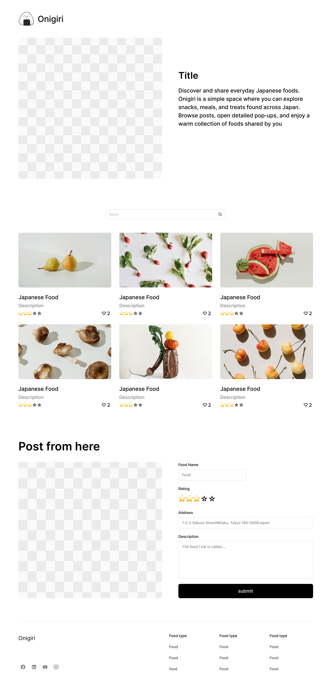
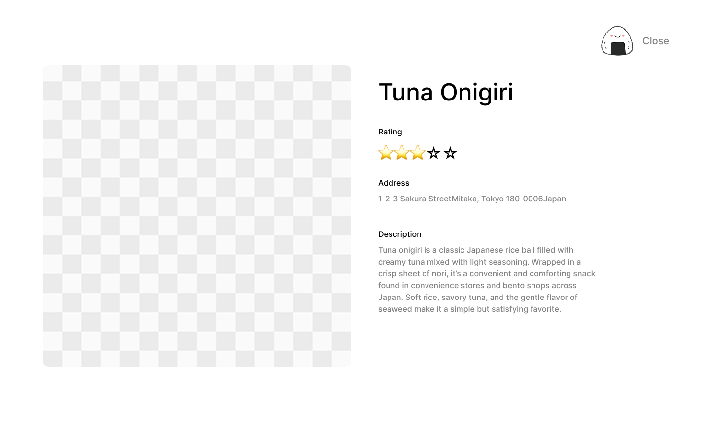

Overview
Purpose
The purpose of this website is to showcase foods found in Japan, including store-bought items and meals from Japanese restaurants. Each post will include a photo, name, and short description so users can discover new Japanese foods and learn more about Japan's food culture.
Audience
The audience includes students, parents, travelers, and anyone interested in exploring Japanese foods, trying new products, or learning about popular restaurant dishes in Japan.
Dynamic elements
I will use JavaScript to make each food post pop up when clicked, add a search bar to filter foods, and show star ratings and likes/hearts. I also plan to use localStorage so user-added posts can be saved and viewed later. Responsive transitions will help the layout adjust smoothly to different screen sizes.
Branding
Website Logo
Style Guide
Color Palette
Palette URL: https://coolors.co/780000-df817a-3b3b3b-ffffff| Primary | Secondary | Accent 1 | Accent 2 |
|---|---|---|---|
| [#3B3B3B] | [white] | [#780000] | [#DF817A] |
Pseudocode for your project
- Create the wireframe for the layout.
- Build the HTML and CSS based on the wireframe.
- Move food post data into JavaScript and connect it with localStorage.
- Add dynamic features such as pop-ups, search, ratings, likes, and responsive behavior.
- Test each feature and make adjustments as needed.
Wireframes
Create wireframes for your project page(s). One for each page and list them here.
Landing page
The photo is just an example.

Pop up
When the post is clicked, this design will pop up.
